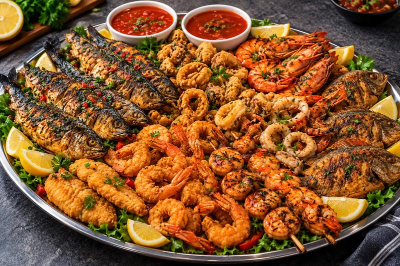
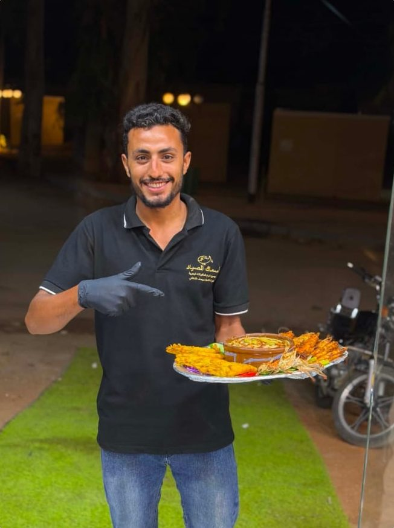

يوسف الشاذلي
مدير المطعمبيتابع التشغيل والجودة وتجربة الزبون من أول طلب لحد آخر طبق.
اتصال 01060927623مطعم الصياد للمأكولات البحرية
أسماك وجمبري وكابوريا وسبيط طازجة، متسوّية على طريقتك، من 2016 لحد النهاردة.

بدأنا سنة 2016 بفكرة بسيطة: سمك طازج، وطعم أصيل، وتسوية على الطريقة اللي الزبون يحبها. من يومها بنقدم الأسماك والجمبري والكابوريا والسبيط والصواني اللي بتجمع العيلة والأصحاب.
بنشتغل بشعار واحد: «الطعم الأصيل ملوش بديل»، وده اللي بيوجّه كل طبق بيخرج من مطبخنا، من الاختيار لحد التقديم.
ثلاث حاجات بنبني عليها شغلنا.
اختيار الأسماك وفواكه البحر هو أول خطوة في طبق ناجح.
مقلي، مشوي رده، مشوي سنجاري، فحم أو طاجن، إنت اللي تختار.
منيو بأسعاره كاملة قدامك، من غير مفاجآت.
الناس اللي ورا المطعم.
بيتابع التشغيل والجودة وتجربة الزبون من أول طلب لحد آخر طبق.
اتصال 01060927623
مسؤول عن الحسابات والتسعير وتنظيم الطلبات عشان كل حاجة تمشي بدقة.
اتصال 01223784195أطباق بتتحضّر طازجة قدامك.
أسرع طريقة: رسالة واحدة.
تصفح المنيو واضغط «اطلب» جنب أي صينية.
الرسالة بتتكتب لوحدها، وإنت تأكد العنوان.
بنجهزه طازج على الطريقة اللي تختارها: مقلي، مشوي، سنجاري، طاجن.
اختار الطريقة الأسهل ليك.
مواعيد العمل يومياً من 10 ص حتى 8 م، والأوردرات من 1 ظهراً · شوف المنيو · حمّل المنيو PDF